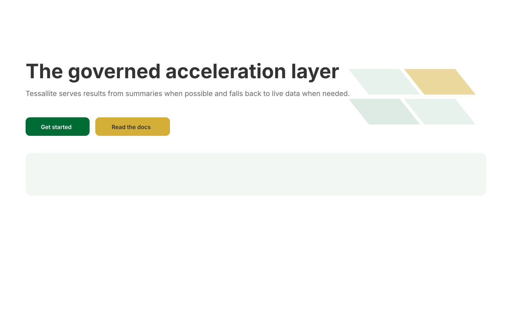
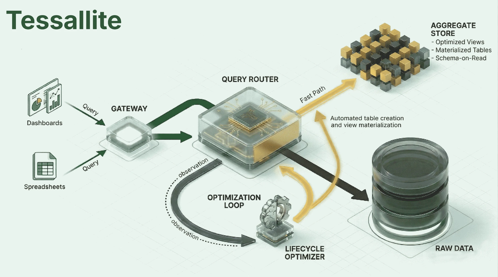

The Transparent Acceleration Layer for Modern BI
Achieve up to 80% reduction in analytical query costs with automated, semantic-aware aggregate management. Sub-second performance for BigQuery and PostgreSQL.

Works With Your Data Stack


The Challenge of Analytical Scale
Direct-to-warehouse queries are slow and expensive. Manual aggregate management is fragile. Tessallite bridges the gap.
Eliminate Scan Costs
Avoid repetitive, high-volume full table scans. Tessallite routes queries to optimized summary tables, significantly lowering your cloud warehouse spend.
Correctness at Scale
We never trade accuracy for speed. Tessallite guarantees 100% exact results by falling back to the raw source whenever an aggregate cannot satisfy the grain.
Automated Lifecycle
Forget manual tuning. Our Optimizer observes workloads, calculates ROI, and manages the entire aggregate lifecycle—from creation to retirement.
Engineering-Grade Experience
Built for analysts who demand the precision of code and the speed of modern cloud infrastructure.
Connect Any BI Tool
Tessallite masquerades as a standard PostgreSQL or XMLA endpoint. Your BI tools see a high-performance database, while we manage the complexity of the underlying warehouse.
// JDBC Connection String
jdbc:postgresql://tessallite.io:5432/analyticsSmart Query Rewriting
The router parses every SQL and DAX query. If a request can be satisfied by a pre-computed aggregate at the correct grain, the query is rewritten on the fly.
SELECT sum(sales) FROM raw_sales // Intercepted
SELECT sum(sales) FROM agg_sales_daily // ExecutedZero-Maintenance Tuning
The Optimizer monitors your "miss" log. When it identifies a recurring pattern that would benefit from acceleration, it automatically creates the aggregate and manages its refresh schedule.
Visualizing the Loop
A transparent proxy that continuously learns from your analytical workloads.

Core Capabilities
Comprehensive tools for analytical acceleration and semantic governance.
Semantic Modeling
Define facts, dimensions, and measures once. Our logical layer maps raw data to business concepts, ensuring governed results across all tools.
DirectQuery DAX Support
Native XMLA-over-HTTP support for Excel and Power BI. Experience sub-second PivotTable performance without data imports.
Multi-Tenant Isolation
A hardened two-level PostgreSQL metadata system ensures strict tenant and project-level isolation for enterprise deployments.
Transparent Governance
Observe every routing decision, monitor aggregate health, and track lineage from the logical measure back to the raw source column.
Trusted by Engineers
"Tessallite reduced our BigQuery scan costs by 75% in the first month. The transparency is what sold us—our dashboards just got faster without changing a single line of DAX."
"The 'Exactness First' guarantee is critical. We've tried other caching layers that returned stale or approximate data. Tessallite's fallback logic is a game-changer for financial reporting."
"Finally, an accelerator that speaks XMLA. Our Excel power users are finally seeing the performance they need on petabyte-scale datasets."
Deploy Anywhere. Total Sovereignty.
Tessallite is built for enterprise security. Maintain absolute control over your metadata and query streams.
Public Cloud
Deploy as containerized services on AWS, GCP, or Azure. Native integration with cloud-native IAM and storage buckets.
Private VPC / VPN
Isolate Tessallite within your existing private network. Secure communication via internal VPN tunnels without public exposure.
Local & Air-Gapped
Run completely on-premise. No "phone home" required. Tessallite has zero dependencies on third-party SaaS services.
Privacy First: No data or metadata ever leaves your environment. Tessallite operates in total isolation, ensuring your analytical patterns remain your private intellectual property.
Product Roadmap
The evolution of the Tessallite acceleration layer.
v0.5.0 (Current)
- BigQuery & PostgreSQL Sources
- JDBC & DAX DirectQuery Protocols
- Automated Aggregate Lifecycle
- Semantic Modeling UI
v0.6.0 (Upcoming)
- dbt Model & Metric Importer
- Cost/ROI Advisor Dashboard
- BigQuery Partition-Swap Refresh
- Calcite-Backed SQL Parser
Technical FAQ
Deep dive into the Tessallite acceleration engine.
How does Tessallite guarantee "Exactness First"?
Tessallite's router understands the grain of every aggregate. If a query requires a grain finer than what is available in the summary tables, the router automatically falls back to the raw source, ensuring 100% accuracy without manual intervention.
Which protocols are supported for BI connectivity?
Tessallite supports the PostgreSQL Wire Protocol for standard JDBC/ODBC connections (Tableau, DBeaver) and XMLA-over-HTTP for native Excel and Power BI DirectQuery workflows.
Accelerate Your Analytics Today
Deploy Tessallite as a containerized solution and start seeing sub-second query performance with up to 80% cost reduction.